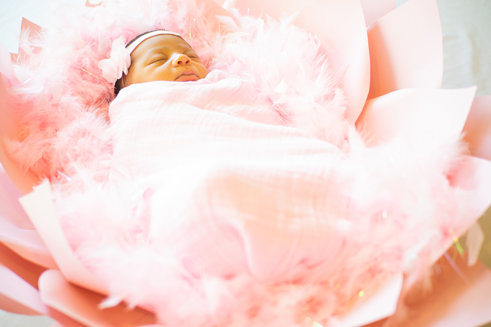

Photography
Capturing special moments is a great passion of mine. Whether it's a sporting event, a family function, or a class project. I love being behind the lens. Examples of my work include:
Daiquiri Factory Images |

|
 |
 |
Family Photos |
 |
|  |
 |
Freestyle Photos |
| Photography |
| If everyone is thinking alike, then somebody isn't thinking. - George S. Patton |

|
Last semester, me and a group of students worked together with the Daiquiri Factory in San Marcos, Tx. We helped this local San Marcos business in gaining attention with their social media accounts, while also recreating their website. Throughout the two months we worked with the Daiquiri factory. The buisness noticed big gains in their Instagram and Twitter followers. Plus a totally redesigned website. Some of the images above were some I took to use for the businesses website.
I am no expert at all in photgraphy, but I've learned a great amount about it and can get some pretty great shots. Remember, senior year is right around the corner and you do not want to be stuck scrambling to find a photographer. Contact information on the contact page.